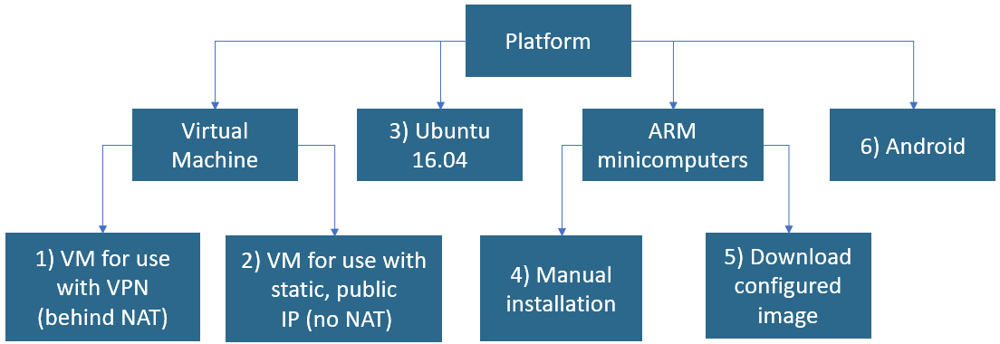

Welcome to SCION Tutorials¶
Introduction¶
This website provides step-by-step instructions on how to install and run the SCION infrastructure. It also provides a list of interesting projects that are using the SCION infrastructure for communication.
To get in touch:
- For questions and general comments on SCION-related topics, visit our SCION community Google group
- For bug reports, please post them on the scion-coord github site
- For suggestion on these pages, please post them on the scion-tutorials GitHub site
Getting started¶
SCION runs on a variety of platforms and works with different network configurations. We cover all approaches with tutorials. To choose the correct tutorial for your setup, follow the flowchart below to determine the number of the tutorial suited for you.
After installation, we suggest exploring the tips and tricks section below to learn how to use the infrastructure.

Running SCION infrastructure in a VM¶
The easiest way to run SCION is by running a preconfigured SCION Virtual Machine on a commodity OS (MacOS, Windows). The following tutorials are covering the necessary steps.
Configuring SCION infrastructure manually¶
The following tutorials cover how to install, configure, and run a SCION infrastructure in a step-by-step manner on a dedicated host (without a VM).
1. Installing SCION on different platforms:¶
- 3) Installing SCION on Ubuntu 16.04 x86
- 4) Installing SCION on Ubuntu MATE 16.04 - Raspberry PI
- 5) Installing SCION on ARM minicomputers using prebuilt images
- 6) Installing SCION on an Android device
2. Setting up SCION topology¶
- Configuring local topology
- Configuring AS and connecting to SCION network for devices with public static IP
- Configuring AS and connecting to SCION network for devices with public static IP behind a NAT
- Configuring AS and connecting to SCION network using OpenVPN
- Configuring SCION endhost
Using SCION in projects¶
- Fetching sensor readings or time stamps
- Fetching a camera image over the SCION network
- Running the bandwidthtester application
- SCIONLab Webapp Visualization
- Running AS Visualization
- Browser AS Visualization
- Command-line AS Visualization
SCION tips and tricks¶
- Verifying the installation
- Updating gen directory
- Updating SCION to a new version
- Adding Wireshark or Tshark dissector plugin